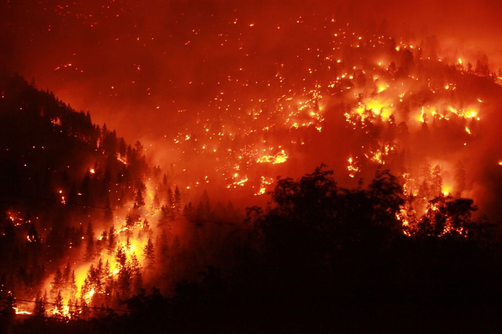

Горски пожар, наричан още пожар в дивата природа e неконтролиран огън в гора, пасища, храсталаци или земя, засети с култури.
Горските пожари директно застрашават живота и димът от горски пожари може да засегне всички ни. Те разпространяват замърсяването на въздуха не само наблизо, но и на хиляди километри - причинявайки затруднения в дишането дори на здрави индивиди, да не говорим за деца, възрастни хора и такива със сърдечни заболявания, диабет, астма и други белодробни заболявания.
Най-големият пожар в съвременната история е пожарът на Черния петък в австралийския щат Виктория през януари 1939 г., който изгаря около 4,9 милиона акра и отне 71 живота.
Всяка година се причиняват около 70 000 горски пожара по целия свят.